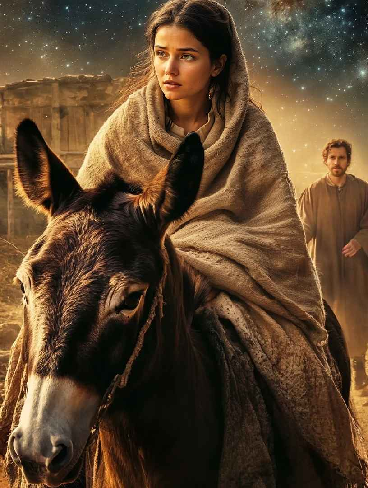
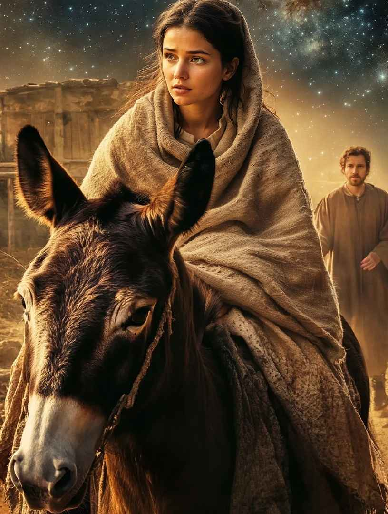

Bing:油画风格、插画风格、水彩风格、不是特别精细的素描风格、迪士尼3D风格
- 优点：理解能力好，绘画风格相对比较干净，氛围感好
- 缺点：有时候生成的图质感不是太好，生成的真实图片比较失真
Krea照片:
- 优点：质感比较真实，颜色比较干净，理解能力好
- 缺点：不适合圣经故事类的图，创意性的图
image FX:照片、部分圣经故事
- 优点：理解能力好，图片质感真实，可以做部分圣经插图
- 缺点：缺少氛围感，不适用大场景
Midjourney:真实照片、水彩风格、油画风格、圣经故事、电影风格
- 优点: 质感真实，细节丰富，基本上适用于各个风格
- 缺点：理解能力相对较差，上手比其他软件要困难一些
❮
❯
生成词
- 主题：人物、地点、干什么、外貌特征，画面内容传达
- 环境：氛围、灯光、细节
- 构图&风格：镜头视觉、风格类型、艺术家
- 备注：长度合理，简单明了，直接，尽可能短，结构清晰
- 风格+主体内容+背景+光线要求
- 正常逻辑就行，每个部分是完整的，可以不分先后顺序。这个AI也能理解。重点：只要符合正常逻辑就可以
- 重点是：风格+具体内容+场景，不写背景，就会随机创作。复杂一点的描述，就根据具体要求逐个加入细节内容．
- 风格+主体内容+人物动作+情绪情感等表情+服装+其他细节+配角+颜色+光线要求+背景要求+景别+角度+氛围+．
- 不同环节的内容表达完整之后用句号结尾。重要内容放前面，放前面表示越关键越重要，依此类推。
- 氛围可以加入具体的描述，明确表达的内涵。可以尝试使用一些形容词、比喻、拟人等修辞手法来增强您的画面感。
- 比如主耶稣默默在人身后守护人等等
- 有些细节内容想不到没写，bing会随机创作。
- 注意：使用英文比中文更好，语言用词表达精炼


 
